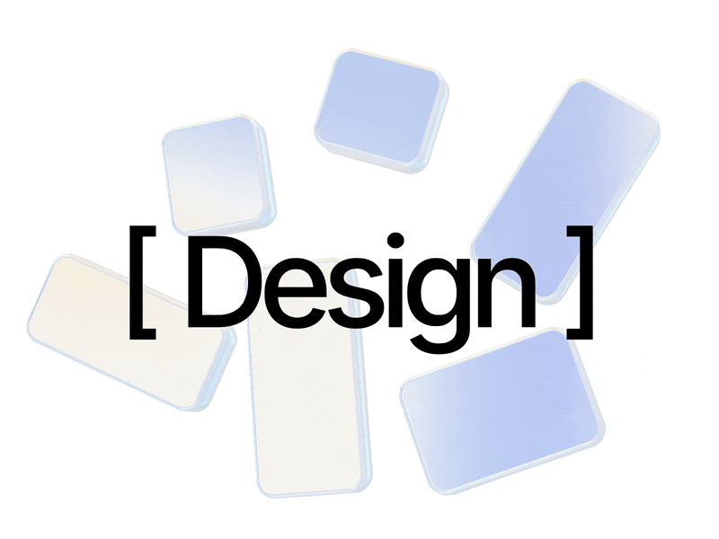

May 2026 — Present
Product Designer — Dontcode | Seoul
Defined entire design system for an AI no-code product builder as a solo designer within a six-person startup team. Shipped design and AI-powered prototypes using Figma and Claude.
Product Designer who
Chanhee Shin is a product designer who turns early ideas into tangible experiences through AI prototyping, helping teams make better decisions with strong visual craft across 3D and motion design.

Selected Work
Use these slots for three to four substantial projects. Each card should link to a case study page with context, process, prototype evidence, and impact.
As AI chats accumulate, conversations become fragmented and users eventually stop organizing them. This project introduces an auto-project suggestion system that groups related chats and helps users continue their work without losing context.
LINC is an AI-mediated communication support system designed to assist multilingual conversations without disrupting conversational flow. It combines AR glasses, a ring controller, and a mobile app to provide discreet, real-time communication support.
An add-on feature for Samsung SmartThings that helps households with newborns save energy by intelligently coordinating connected IoT devices based on everyday parenting behaviors.
DentAH is an AI-powered dental care service that helps users manage their oral health at home using Q-ray technology. It provides AI-based dental checkups, personalized home care guidance, and appointment booking services.
Resume
May 2026 — Present
Defined entire design system for an AI no-code product builder as a solo designer within a six-person startup team. Shipped design and AI-powered prototypes using Figma and Claude.
July 2025 — August 2025
Led an end-to-end corporate website redesign to strengthen brand credibility. Designed and published a fully responsive website using Framer.
June 2023 — February 2024
Led the website redesign and grew conversion rate from 6% to 20%. Suggested a survey system adopted across the office. Managed 4 social media accounts and grew Instagram followers by 250%.
2020 — 2026
User Experience Design, Data-Driven Design, Interactive Capstone Product Design
About
Chanhee Shin is a product designer who turns early ideas into tangible experiences through AI prototyping, helping teams make better decisions with strong visual craft across 3D and motion design.
Contact